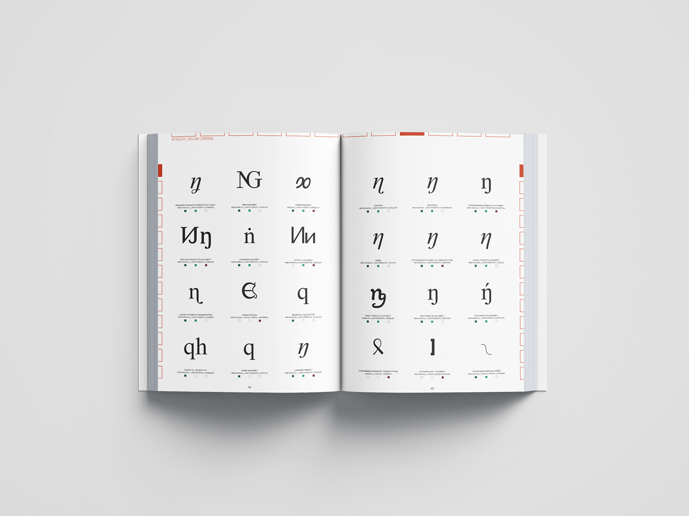
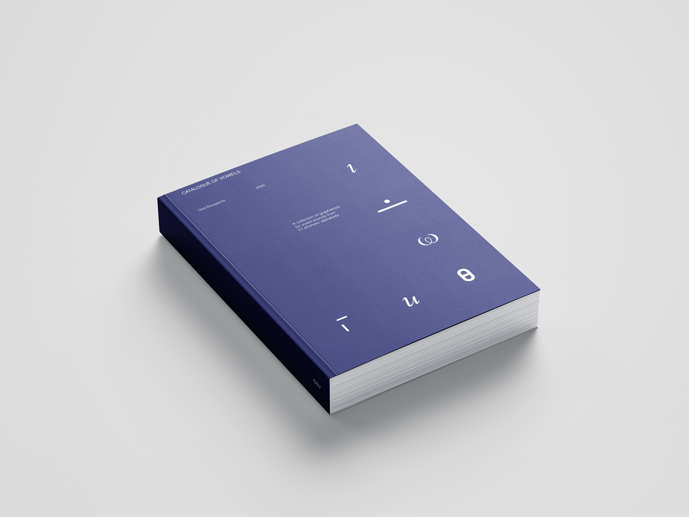
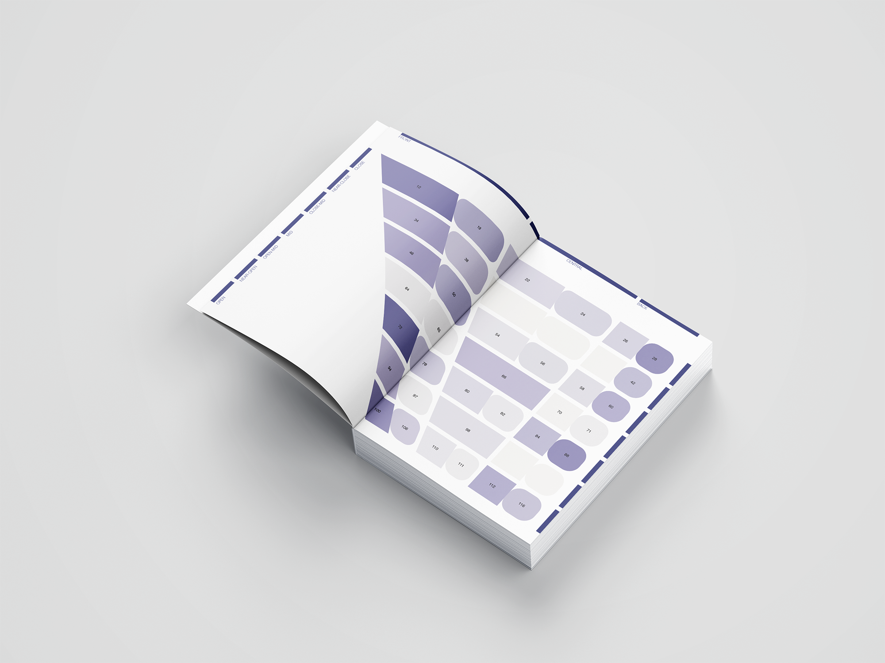
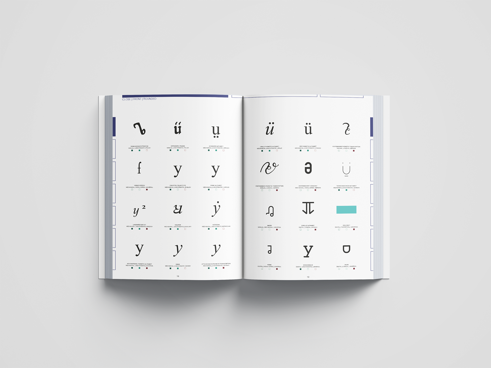
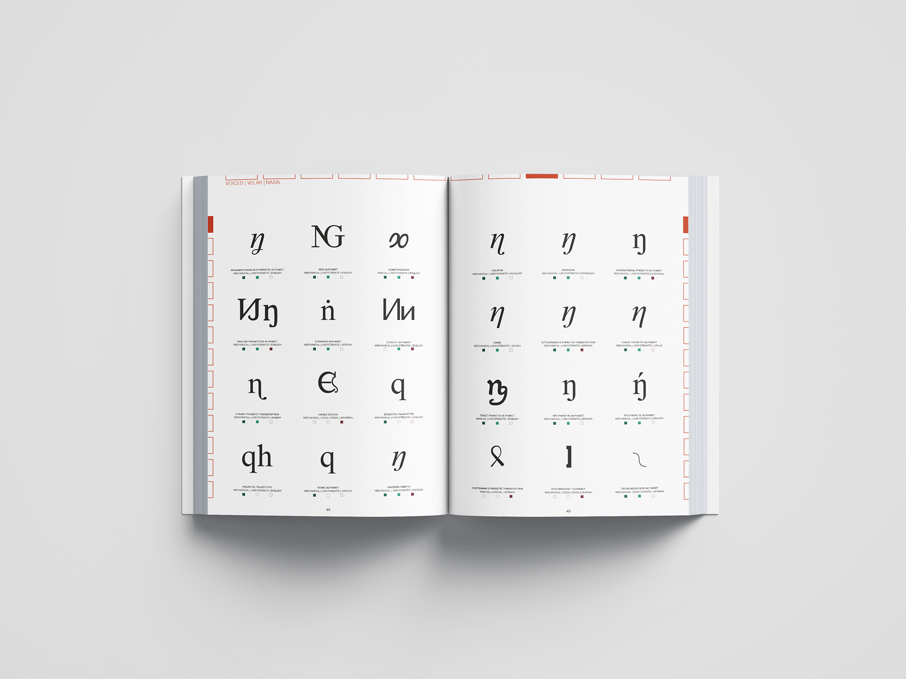
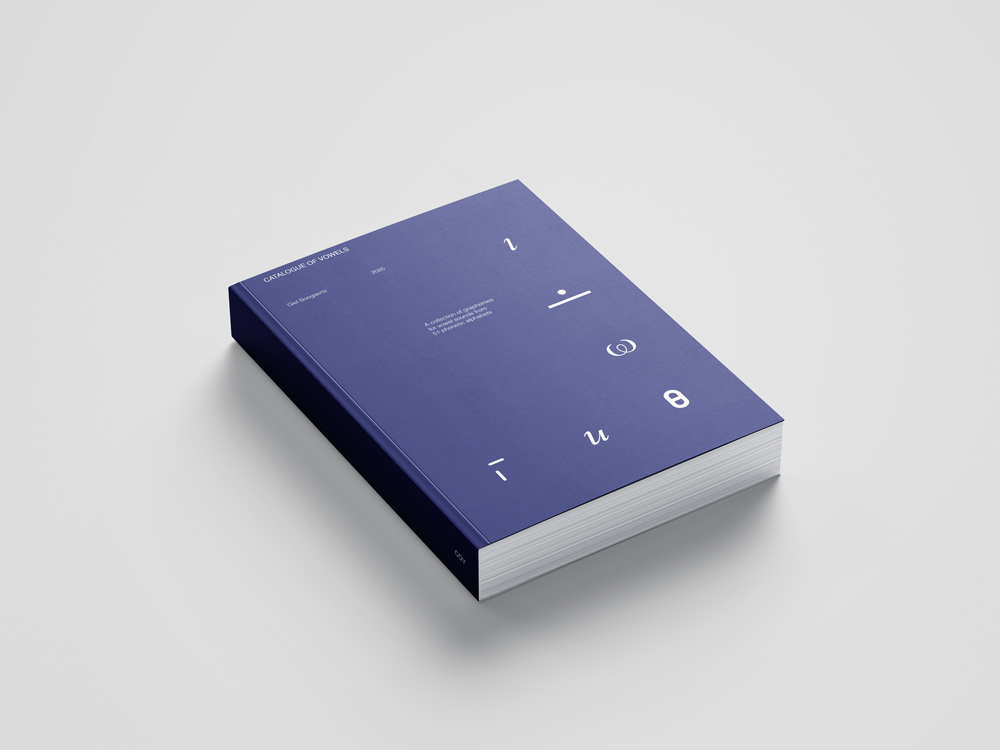
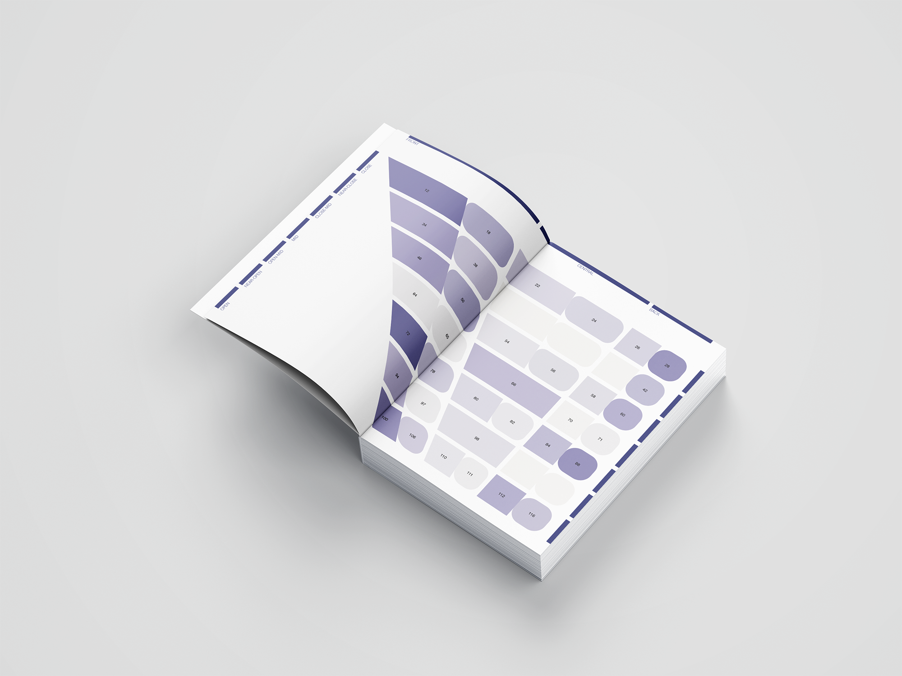
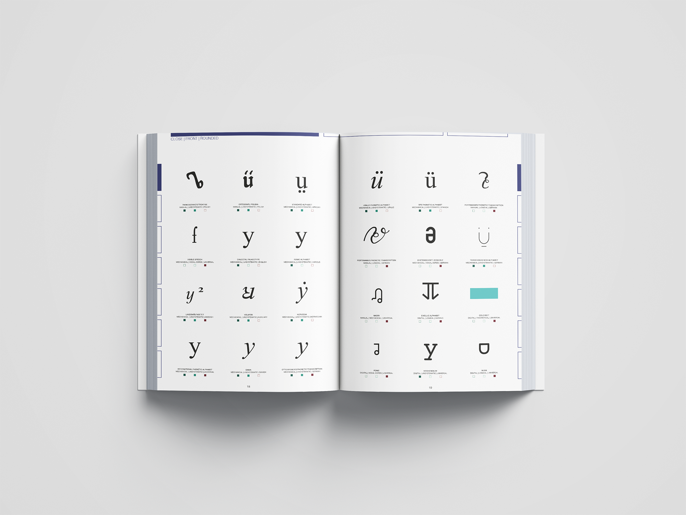

TYPE-INTER-PLAY
 







Description
In this masterproject I explored ways for structuring phonetic alphabets* through book design.
I developed (macro)typographical systems to file and dissect these alphabets and to give the opportunity to compare between alphabets on an intellectual and formal basis.
The project exists as a book series starting with the Encyclopedia of Phonetic Alphabets, where each alphabet is covered individually with information and the formal aspects.
Secondly there are the Catalogue of Consonants and the Catalogue of Vowels, where all consonant- and vowel glyphs are grouped within their respective speech sound.
The content of the project consists of 51 phonetic alphabets starting from the 15th century up until the present, and it holds over 3700 glyphs.
This project was made within the International master of Reading Type & Typography under the guidance of Dr. Prof. Ann Bessemans, Kevin Bormans and Giulio Galli at PXL-MAD School of Arts.
*A phonetic alphabet is a writing system or alphabet based on speech sounds.